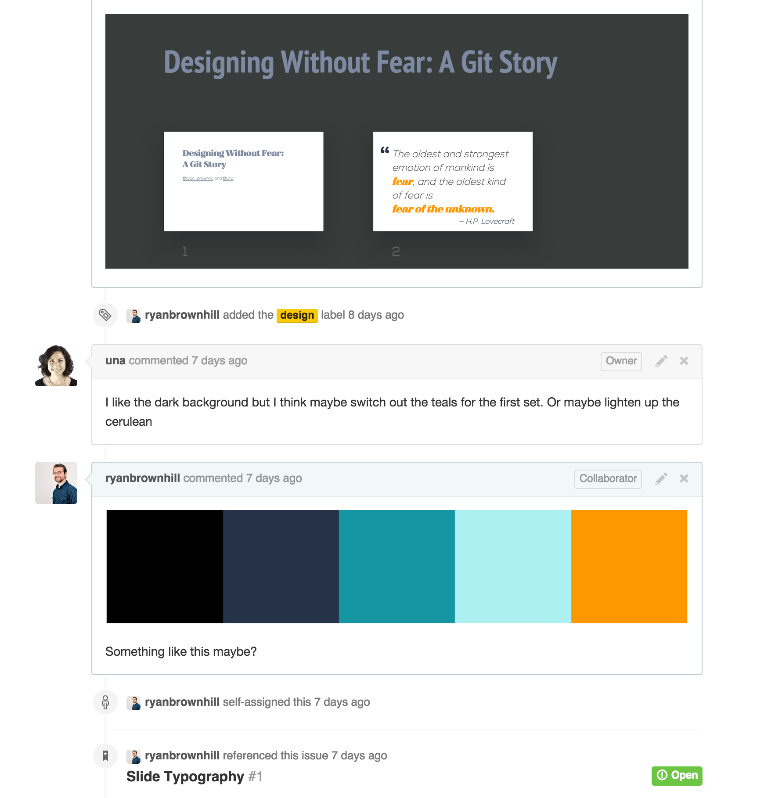
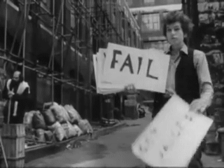
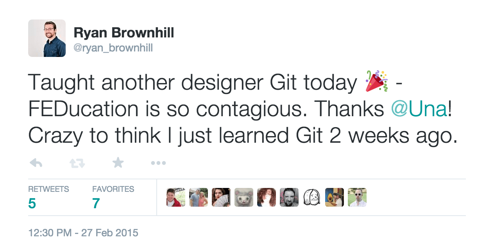

The oldest and strongest emotion of mankind is fear, and the oldest kind of fear is
fear of the unknown.
— H.P. Lovecraft
-- words popping up all over the place, git stays --
- kerning
- leading
- dpi
- rgb
- cmyk
- sass
- push
- pull request
- gulp
- grunt
- npm
- bundle
- packages
- git
- json
- serif
- terminal
- point
- gutter
- html
- svg
- ppi
- vector
- raster
- crop
- orphan
- rag
- import
UNA: -- git as a collaboration tool --
All the developers use git
It can't be that hard.
Peace, love, empathy
UNA -- setting up environment to make the adaption/learning curve easier --
UNA: -- dont worry about breaking things, I've broken everything! --
Positive Reinforcement (every little thing was exciting -- getting things working), asking questions, not being afraid to ask questions
This is where we are stil living --> excited about all of the things, and building things together -- learning from each other
UNA: I learned liquid animations
RYAN: I learned performant animations
UNA: Ryan was a guinea pig I could prototype workflows with and run ideas by -- told me what did and didn't work
$easingcurve: cubic-bezier(0.25, 0.25, 0.5, 1);
UNA: I learned that you can change the easing function within the animation, hadnt even thought of it that way before
git add -A
git commit -m “All Day Everyday"
git push origin master

UNA: The more we use it on a daily basis, the more fluid this workflow gets. The easier and faster it is to communicate -- transcends work

We weren't afraid to try something new and fail at it.

RYAN: I can relate to developers from any team better now - I am helping teach out team git
UNA: We can bring this to the rest of the studio
Fears are educated into us, and can, if we wish, be educated out.
— Karl Augustus Menninger